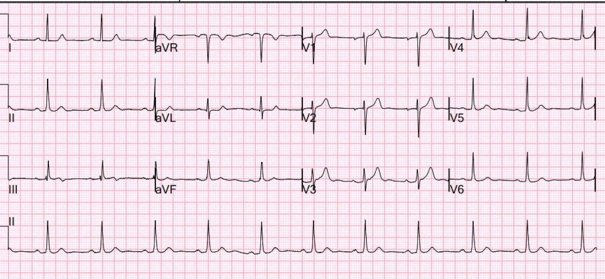
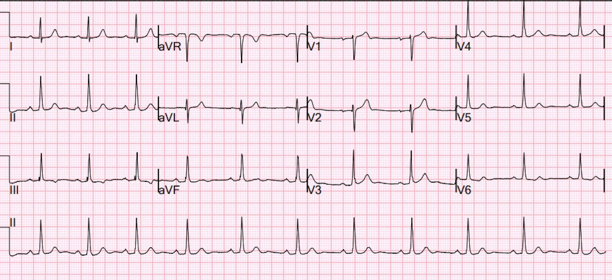
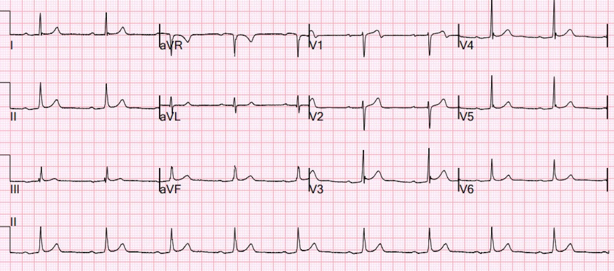
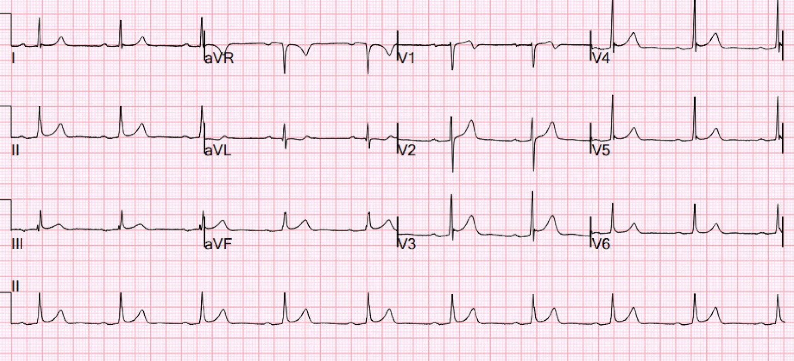
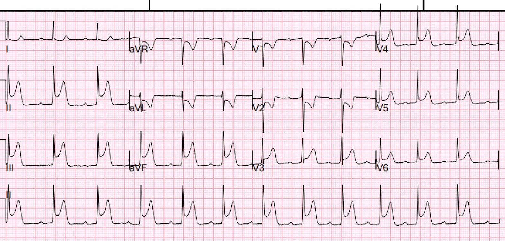
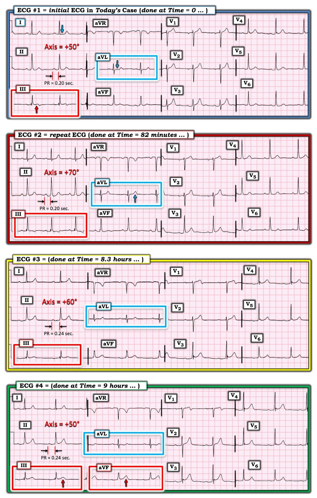

03/12/2024 — Theo dõi ST liên tục tại khoa cấp cứu có thể phát hiện được gì?
Bản dịch tiếng Việt của bài "What can you find with continuous ST monitoring in the ED?" – Dr. Smith’s ECG Blog. Giữ nguyên toàn bộ 7 hình ảnh của bản gốc.
Bài này do một trong những bác sĩ nội trú xuất sắc của chúng tôi viết, người sắp trở thành bác sĩ đào tạo chuyên sâu (fellow) về cấp cứu ngoài viện (EMS): Michael Perlmutter
Ca bệnh
Một bệnh nhân nam ở độ tuổi giữa 50 đến khoa cấp cứu (ED) vì cảm giác nóng rát, nặng lên đột ngột khi đang ở nhà. Ông vừa trở về sau một chuyến đi nước ngoài, nơi các triệu chứng này đã từng lúc gây khó chịu trong những tuần trước đó và được cho là do ợ nóng.
Tối hôm trước, khi đang nghỉ ngơi, ông bị đau dữ dội kèm khó thở, vã mồ hôi và một cơn ngất ngắn. Sau cơn ngất ông vẫn còn đau nhưng vẫn đi ngủ, và sáng thức dậy vẫn còn đau.
Ông đến khoa cấp cứu do vợ thúc giục. Lúc đến khoa cấp cứu, ông không có triệu chứng nhưng xuất hiện những đợt khó chịu nóng rát tái phát cực kỳ ngắn, tập trung quanh hõm ức.
Với bệnh sử này, bác sĩ cho ghi điện tâm đồ, làm xét nghiệm (bao gồm troponin độ nhạy cao) và chụp X-quang ngực.
Đây là điện tâm đồ đầu tiên, tại thời điểm gốc (time zero):


Đây là điện tâm đồ ban đầu của ông: Bạn nghĩ gì?
Smith: điện tâm đồ này được đưa cho tôi xem mà không kèm bất kỳ thông tin nào khác, và tôi nói rằng nó gợi ý mạnh OMI thành dưới, có lẽ đã tái tưới máu. Có ST chênh lên (STE) tối thiểu ở chuyển đạo III với ST chênh xuống (STD) soi gương ở aVL. Phần cuối sóng T đảo ngược ở chuyển đạo III, và dương ở phần cuối theo kiểu soi gương ở chuyển đạo aVL.
Tôi đưa điện tâm đồ này qua Queen of Hearts và bất ngờ khi thấy cô ấy không nhận ra.
Ca bệnh tiếp diễn
Siêu âm tim tại giường cho thấy chức năng thất trái nhìn chung bảo tồn, không có rối loạn vận động thành đáng kể, không tràn dịch màng ngoài tim và không có bất thường van rõ rệt. Troponin I độ nhạy cao ban đầu là 1300 ng/L, và vì các thăm dò tim mạch khác không có gì đặc biệt, bệnh nhân được chụp CT để đánh giá thuyên tắc phổi (PE) và phình hoặc bóc tách động mạch chủ, nhưng kết quả cũng không phát hiện gì. Một điện tâm đồ khác cũng được ghi.
Điện tâm đồ lúc 82 phút:


Bạn nghĩ gì?
Smith: toàn bộ ST chênh lên ở chuyển đạo III đã mất, ST chênh xuống ở aVL cũng vậy. Thay đổi động (dynamic) này có giá trị chẩn đoán hội chứng vành cấp (ACS). Và dĩ nhiên, troponin tăng cũng vậy.
Bác sĩ tim mạch được mời hội chẩn và đồng ý rằng bệnh sử của bệnh nhân thuộc nguy cơ cao ACS và cần chụp mạch vành vào ngày hôm sau. Bệnh nhân được bắt đầu truyền heparin tĩnh mạch và cho dùng aspirin. Việc chăm sóc được bàn giao cho kíp trực đêm với kế hoạch tiếp tục đo troponin nhiều lần liên tiếp và cho bệnh nhân nhập viện để chụp mạch vành.
Trong đêm, troponin tiếp tục tăng, nhưng bệnh nhân vẫn không có triệu chứng và nghỉ ngơi giữa các lần chăm sóc. Khi được hỏi kỹ, ông thừa nhận có những đợt cảm giác nóng rát sau xương ức nhẹ, rất ngắn, và các điện tâm đồ liên tiếp đã được ghi.
thời điểm gốc: 1378
1 giờ: 1436
4 giờ: 1651
6 giờ: 1750
8 giờ: 1850
Smith: Nhưng troponin tăng chỉ cho bạn biết về quá khứ, chứ không cho biết về thời điểm hiện tại!!
Điện tâm đồ lúc 8,3 giờ


Giờ đã hoàn toàn bình thường hóa
Giờ có điều gì đáng chú ý?
Điện tâm đồ đầu tiên đáng lo ngại vì có hình ảnh giống Wellens với những thay đổi tái tưới máu kín đáo, trong bối cảnh triệu chứng tương đương đau thắt ngực ngắt quãng (stuttering), nhưng không điện tâm đồ nào có giá trị chẩn đoán STEMI hay OMI.
Về khuya, bệnh nhân bị nhịp chậm và xuất hiện hình ảnh Mobitz II, nhưng ông vẫn không có triệu chứng và ổn định huyết động. Rất sớm vào buổi sáng, ông báo cảm giác ợ nóng tái phát, nên một điện tâm đồ khác được ghi.
Điện tâm đồ lúc 9 giờ:


Bạn nghĩ gì?
Smith: ST chênh lên kèm ST chênh xuống soi gương ở aVL đã quay lại. Ngoài ra, giờ đã có sóng T tối cấp ở các chuyển đạo dưới. Cũng có một chút ST chênh lên mới ở các chuyển đạo trước tim bên phải: liệu có kèm tổn thương thất phải không?
Điện tâm đồ này cũng chưa có giá trị chẩn đoán OMI, dù các thay đổi động có giá trị chẩn đoán ACS. Tuy nhiên, khi xuất hiện Mobitz II và triệu chứng ngắt quãng vẫn tiếp diễn, máy điện tâm đồ 12 chuyển đạo được để nguyên trên người bệnh nhân và được theo dõi.
Sau khoảng 10-15 phút, có một thay đổi đáng kể: ghi nhận ST chênh lên rất lớn ở thành dưới kèm ST chênh xuống soi gương ở các chuyển đạo bên, và bệnh nhân được chuyển sang phòng hồi sức ổn định (stabilization room).
Điện tâm đồ lúc 11 giờ:


Không cần bình luận
Với điện tâm đồ có dấu hiệu chẩn đoán này, truyền heparin được ngừng, bệnh nhân được tiêm bolus 5000 đơn vị heparin và cho 180 mg ticagrelor trong khi phòng thông tim được kích hoạt và bác sĩ tim mạch can thiệp được mời hội chẩn cấp cứu.
Chụp mạch vành được thực hiện, cho thấy LAD bình thường, LCX lớn đồng ưu thế (co-dominant), và tổn thương hẹp 95% ở RCA đoạn giữa. Thấy một động mạch liên thất sau phải (RPDA) lớn và một nhánh nhĩ thất sau phải (RPAV) nhỏ cho ra nhánh RPL1. RCA được đặt stent thành công, ghi nhận dòng chảy TIMI III sau thủ thuật, và bệnh nhân hồi phục tốt, siêu âm tim qua thành ngực (TTE) sau PCI cho thấy phân suất tống máu thất trái (LVEF) tốt và không có rối loạn vận động thành. Với giải phẫu động mạch vành phải thấy trên chụp mạch, điều đặc biệt thú vị là các điện tâm đồ trước đó có những thay đổi sóng T kín đáo ở các chuyển đạo bên cao, vốn thường chỉ gặp khi tổn thương RCA ở vị trí gần hơn.
Ca này nhấn mạnh tầm quan trọng của việc duy trì mức độ nghi ngờ cao đối với bệnh lý quan trọng về mặt lâm sàng, ngay cả khi không có triệu chứng kinh điển hoặc khi điện tâm đồ không có STEMI dù troponin ban đầu đã cao.
Ca này nhấn mạnh giá trị của việc theo dõi điện tâm đồ 12 chuyển đạo liên tục, điều không sẵn có thường quy ở nhiều cơ sở nhưng đã tỏ ra vô cùng quý giá giúp chẩn đoán kịp thời đúng vào lúc điện tâm đồ trở nên có giá trị chẩn đoán.
Smith: Có một quan niệm sai lầm rằng troponin tăng dần đã ảnh hưởng đến quyết định đưa bệnh nhân vào phòng thông tim. Thực ra nó nên có rất ít ảnh hưởng đến chúng ta. Troponin tăng chỉ cho chúng ta biết điều đã xảy ra từ nhiều giờ trước. Một ổ nhồi máu kích thước khá lớn không còn thiếu máu cục bộ đang diễn ra vẫn sẽ có troponin tiếp tục tăng do tổn thương đã gây ra từ nhiều giờ trước. Cách duy nhất để biết bệnh nhân này, người mà bạn biết là đang bị nhồi máu cơ tim cấp, có cần vào phòng thông tim hay không là nếu 1) có triệu chứng và không kiểm soát được, hoặc 2) điện tâm đồ cho thấy thiếu máu cục bộ đang diễn ra. Ngoài ra: mất ổn định điện học, phù phổi, hoặc tụt huyết áp.
Trong ca này, đã có mất ổn định điện học (blốc Mobitz II). Chỉ riêng điều đó đã đủ để kích hoạt phòng thông tim.
Điều này dường như đã không thúc đẩy việc kích hoạt phòng thông tim, nhưng nó đã dẫn tới việc theo dõi điện tâm đồ liên tục, nhờ đó ghi được điện tâm đồ buộc phải kích hoạt phòng thông tim.

===================================
BÌNH LUẬN CỦA TÔI, bởi KEN GRAUER, MD (3/12/2024):
===================================
Ca hôm nay là một bài học về sự kín đáo quan trọng — từ đó có thể rút ra nhiều điều khi nhìn lại.
- Câu hỏi thứ 1 được đặt ra là — Liệu một trong 2 điện tâm đồ đầu tiên có thể có giá trị chẩn đoán OMI thành dưới cấp hay không?
- Có lẽ câu hỏi quan trọng hơn về mặt lâm sàng là — Làm thế nào chúng ta có thể nhìn lại để học được những gì lẽ ra có thể làm tốt hơn. Dù hoàn toàn thừa nhận rằng “Nhìn lại qua kính nhìn hồi cứu (retrospectoscope) thì mọi thứ sáng tỏ 100%” (tức là, từ sự thoải mái của chiếc ghế bên bàn máy tính của tôi) — tôi nghĩ sẽ có ích khi xem lại 4 bản ghi liên tiếp trong ca này.
- LƯU Ý: Bài có nhắc rằng tổng cộng 10 điện tâm đồ liên tiếp đã được ghi trong ca hôm nay trong khoảng thời gian 11 giờ. Tôi chỉ có được 4 điện tâm đồ mà tôi trình bày trong Hình 1 — cộng với điện tâm đồ cuối cùng ghi lúc T = 11 giờ, khi đó thấy ST chênh lên tối cấp lan tỏa và rầm rộ. Tôi chỉ giới hạn bình luận của mình trong bệnh sử được cung cấp và 4 điện tâm đồ trình bày trong Hình 1.


SUY NGHĨ BAN ĐẦU CỦA TÔI về CA BỆNH Hôm nay:
Bệnh sử trong ca hôm nay là của một người đàn ông ở độ tuổi giữa 50 bị CP (Chest Pain – đau ngực), dường như đã xuất hiện từng lúc trong một khoảng thời gian (vài tuần?) — với một cơn nặng hơn vào đêm trước khi đến viện. Bệnh nhân ghi nhận một “cơn ngất ngắn”. Cơn đau ngực quay lại vào sáng hôm đó — nhưng bệnh nhân không đau ngực tại T = 0 khi ghi điện tâm đồ #1.
- Với bệnh sử này (với tính chất từng lúc của triệu chứng ở bệnh nhân này) — bất cứ điều gì cũng có thể thấy trên điện tâm đồ ban đầu. Do đó cần nhận ra rằng ngay cả NẾU bệnh nhân này đang có một biến cố tim tiếp diễn — Chúng ta không nhất thiết sẽ thấy những thay đổi cấp tính rõ ràng.
- Thay vào đó, điều có thể thấy — là một mức độ “giả bình thường hóa” (tức là, nếu tái tưới máu tự phát đã xảy ra ở một mức độ nào đó vào một thời điểm nào đó). Vì vậy chúng ta nên sẵn sàng tìm kiếm những dấu hiệu điện tâm đồ kín đáo có thể quan trọng — và cần đối chiếu sự hiện diện và mức độ nặng của triệu chứng với từng điện tâm đồ liên tiếp này để hiểu rõ nhất những gì đã xảy ra.
Điện tâm đồ Ban đầu trong Hình 1 (ghi tại T = 0):
Nhịp ở điện tâm đồ #1 là nhịp xoang ~65 lần/phút. Mọi khoảng (PR, QRS, QTc) và trục mặt phẳng trán đều bình thường. Không có lớn buồng tim.
- Như sẽ trở nên quan trọng ngay sau đây — khoảng PR = 0,20 giây ở điện tâm đồ #1 — trục mặt phẳng trán = +50 độ — và bệnh nhân không đau ngực vào lúc ghi bản ghi này.
- Ở điện tâm đồ #1 — 3 chuyển đạo cho thấy dấu hiệu có thể đáng lo ngại: i) Dấu hiệu đáng lo nhất thấy ở chuyển đạo III (trong hình chữ nhật ĐỎ) — có ST chênh lên nhẹ nhưng thật sự (mũi tên ĐỎ), với sóng T hai pha kết thúc bằng phần cuối âm.
- ii) Việc bất thường ST-T này là “thật” — được củng cố bởi thay đổi soi gương ở các chuyển đạo bên cao aVL và I (mũi tên XANH chỉ ST thẳng đuỗn, với gợi ý ST chênh xuống ở các chuyển đạo này).
- Ở các chuyển đạo ngực — có “mất cân đối“ sóng T (T wave imbalance), ở chỗ sóng T dương ở chuyển đạo V1 cao hơn sóng T dương ở chuyển đạo V6. Như tôi nhấn mạnh trong Bình luận của tôi ở bài ngày 1 tháng Sáu năm 2022 trên Dr. Smith’s ECG Blog — “mất cân đối sóng T” như vậy là một dấu hiệu không đặc hiệu mà đôi khi tôi thấy hữu ích như một “manh mối” của hội chứng vành cấp mà lẽ ra tôi đã không nhận ra.
- ĐIỀU CỐT LÕI: Dù tôi thấy điện tâm đồ #1 chưa có giá trị chẩn đoán OMI nếu xét riêng như một bản ghi đơn lẻ — với bệnh sử này, tôi nghĩ các dấu hiệu bất thường kín đáo ở các chuyển đạo I,III,aVL và “mất cân đối” sóng T ở chuyển đạo trước tim — có thể phản ánh một mức độ “giả bình thường hóa” (do tái tưới máu tự phát) ở một bệnh nhân có biến cố gần đây, nhất là vì bệnh nhân không đau ngực vào lúc ghi điện tâm đồ #1!
- Gợi ý: Vì dấu hiệu điện tâm đồ có thể thay đổi rất nhanh trong hội chứng vành cấp có thời gian khởi phát không chắc chắn — tôi ủng hộ không chờ quá ~20 phút cho lần ghi lại điện tâm đồ đầu tiên (với các bản ghi lặp lại thêm cách nhau ngắn cho đến khi có dấu hiệu rõ ràng là không tiến triển).
Điện tâm đồ thứ 2 trong ca hôm nay (điện tâm đồ #2 được ghi tại T = 82 phút):
Dù không rõ bệnh nhân có (hay không) đau ngực vào lúc ghi điện tâm đồ #2 — troponin ban đầu trả về tăng đáng kể, ở mức 1300 ng/L.
- Lý do tôi ghi nhận sự dịch chuyển nhẹ của trục mặt phẳng trán ở điện tâm đồ #2 (tức là, từ +50 sang +70 độ) — là vì có thay đổi kín đáo nhưng thật sự về hình dạng điện tâm đồ ở các chuyển đạo đã nêu ở trên của điện tâm đồ #1 — và chúng ta muốn chắc chắn rằng thay đổi trục mặt phẳng trán không phải là nguyên nhân của điều này (tôi không nghĩ thay đổi nhẹ về trục này là nguyên nhân gây ra thay đổi hình dạng ST-T ở các chuyển đạo chi).
- Cụ thể: i) Dù hình dạng QRS không khác biệt đáng kể — không còn ST chênh lên nào ở chuyển đạo III; — và, ii) Không còn gợi ý ST chênh xuống nào ở chuyển đạo I và aVL — và biên độ sóng T đã tăng nhẹ ở cả hai chuyển đạo này.
- Dù hoàn toàn thừa nhận sự kín đáo của các thay đổi ST-T ở chuyển đạo chi này — việc 3 chuyển đạo cho thấy diễn tiến tương tự gợi ý với tôi rằng các thay đổi này là “thật” — và có thể phản ánh thay đổi ST-T “động”. Với troponin tăng (= 1300 ng/L) — Chẳng phải chẩn đoán OMI cấp (và nhu cầu thông tim kịp thời) đã được xác lập rồi sao?
Điện tâm đồ thứ 3 và thứ 4 (ghi tại T = 8,3 giờ — và T = 9 giờ):
Bệnh nhân dường như tiếp tục có triệu chứng ngắt quãng (tái phát cảm giác “ợ nóng”) trong đêm. Vào một thời điểm nào đó — bệnh nhân bị nhịp chậm và xuất hiện “hình ảnh Mobitz II” — nhưng ông vẫn không có triệu chứng và ổn định huyết động.
Nhằm chỉ ra những vấn đề kín đáo nhưng có liên quan trong ca hôm nay — tôi xin lưu ý những điểm sau:
- Dù trục chỉ điều chỉnh nhẹ — các chuyển đạo chi ở điện tâm đồ #3 và điện tâm đồ #4 tiếp tục cho thấy những thay đổi tái tưới máu mạch vành đang diễn ra. Bao gồm: i) Biên độ sóng T tăng dần ở chuyển đạo III và aVF (so với điện tâm đồ #2); — và, ii) Biên độ sóng T giảm dần ở chuyển đạo aVL (so với điện tâm đồ #2).
- Lưu ý thay đổi liên tiếp về hình dạng ST-T ở chuyển đạo V1 qua 4 điện tâm đồ trong Hình 1. Dù chúng ta thường liên hệ sự xuất hiện của sóng T đi xuống dốc nhọn kiểu Wellens vào phần cuối âm ở các chuyển đạo V2,V3,V4 với hội chứng Wellens — ở đây chúng ta thấy diễn tiến này chỉ ở chuyển đạo V1. Nhìn lại — tôi diễn giải các thay đổi ST-T liên tiếp ở chuyển đạo V1 này là bằng chứng ủng hộ dấu hiệu “mất cân đối” sóng T ở chuyển đạo trước tim sớm như một dấu hiệu “manh mối” mà tôi đã ghi nhận khi đọc điện tâm đồ #1.
- Cũng lưu ý sự xuất hiện của khía điểm J rõ rệt ở chuyển đạo V3,V4 mà trước đó không thấy. Như trong Bình luận của tôi ở bài ngày 2 tháng Hai năm 2024 — khi biết kết quả thông tim của ca hôm nay, nhìn lại tôi diễn giải dấu hiệu này là biểu hiện của sóng Osborn do thiếu máu cục bộ .
Bệnh nhân xuất hiện blốc AV, “Mobitz loại II” trong đêm …
Nhận thức rằng không thể chẩn đoán xác định bản chất của blốc dẫn truyền được nhắc tới trong phần mô tả ca hôm nay nếu không xem các dải nhịp điện tâm đồ thực tế — tôi cho rằng xác suất thống kê để loại blốc AV quan sát được là Mobitz I (và không phải Mobitz II) là vượt xa 90-95%.
- Bệnh nhân hôm nay được phát hiện qua thông tim là có OMI do RCA. Mobitz I thường gặp trong bối cảnh lâm sàng này. Mobitz II thì không. Điều này càng đúng vì: i) Phức bộ QRS hẹp ở cả 4 điện tâm đồ trong Hình 1 (trong khi QRS thường rộng khi có Mobitz II); — và, ii) 2 điện tâm đồ đầu tiên trong ca hôm nay có khoảng PR bình thường ( = 0,20 giây) — trong khi điện tâm đồ #3 và điện tâm đồ #4 giờ cho thấy blốc AV độ 1 (khoảng PR = 0,24 giây). Mobitz I trong bối cảnh OMI thành dưới thường tiến triển từ khoảng PR bình thường — sang blốc AV độ 1 — rồi sang blốc độ 2, Mobitz I. Trình tự tiến triển này không gặp ở Mobitz II — vốn thường biểu hiện bằng dẫn truyền thất bại đột ngột dù khoảng PR hằng định (và thường bình thường).
- Điều nhiều khả năng nhất đã thấy trong đêm — là blốc AV độ 2 với dẫn truyền AV 2:1, vốn thường bị đọc nhầm là Mobitz II (vì khoảng PR vẫn hằng định khi cứ cách một nhát lại có một nhát không được dẫn truyền). Về mặt kỹ thuật — không thể phân biệt Mobitz I với Mobitz II khi có dẫn truyền AV 2:1 — vì bạn không bao giờ thấy 2 nhát được dẫn truyền liên tiếp (nên bạn không bao giờ biết liệu khoảng PR có kéo dài dần trước khi rớt một nhát NẾU có cơ hội làm vậy hay không). Dù vậy — trong bối cảnh OMI thành dưới cấp với QRS hẹp và diễn tiến từ khoảng PR bình thường sang kéo dài — khả năng blốc AV 2:1 là Mobitz I là áp đảo. (Để tìm hiểu thêm về cách nhận biết trên điện tâm đồ và ý nghĩa lâm sàng của các blốc AV độ 2 — Mời xem Bình luận của tôi ở cuối trang trong bài ngày 12 tháng Mười Một năm 2024 trên Dr. Smith’s ECG Blog).
- Ý nghĩa lâm sàng: Khi thấy khoảng PR kéo dài trong đêm — rồi tiến triển thành blốc AV 2:1 — Vào chính lúc đó, chúng ta đã có thêm một bằng chứng nữa có giá trị chẩn đoán OMI thành dưới cấp đang diễn ra.